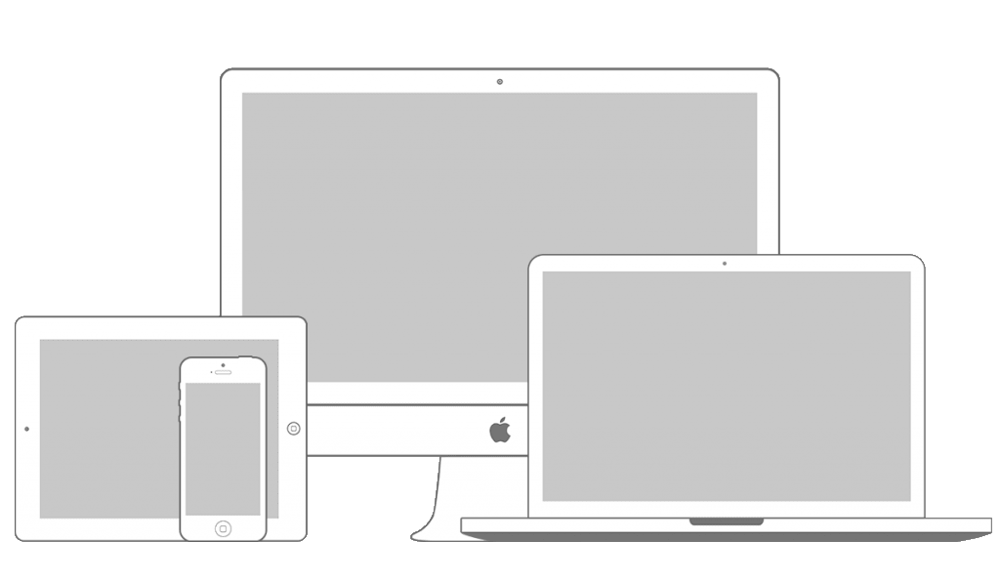

TAGLINE

Source helps creators do more of what they love
A device that enables collaboration will lessen the chance of work having to be completely done.
A device that enables collaboration will lessen the chance of work having to be completely done.
In such a test, the user performs realistic tasks by interacting with the paper prototype
First link >Three techniques of paper prototyping used for usability testing are comps, wireframes
Second link >Rapid prototyping involves a group of designers who each create a paper prototype
Third link >Functionality is similiarly unimportant, but in this case are closer to the final product
Fourth link >